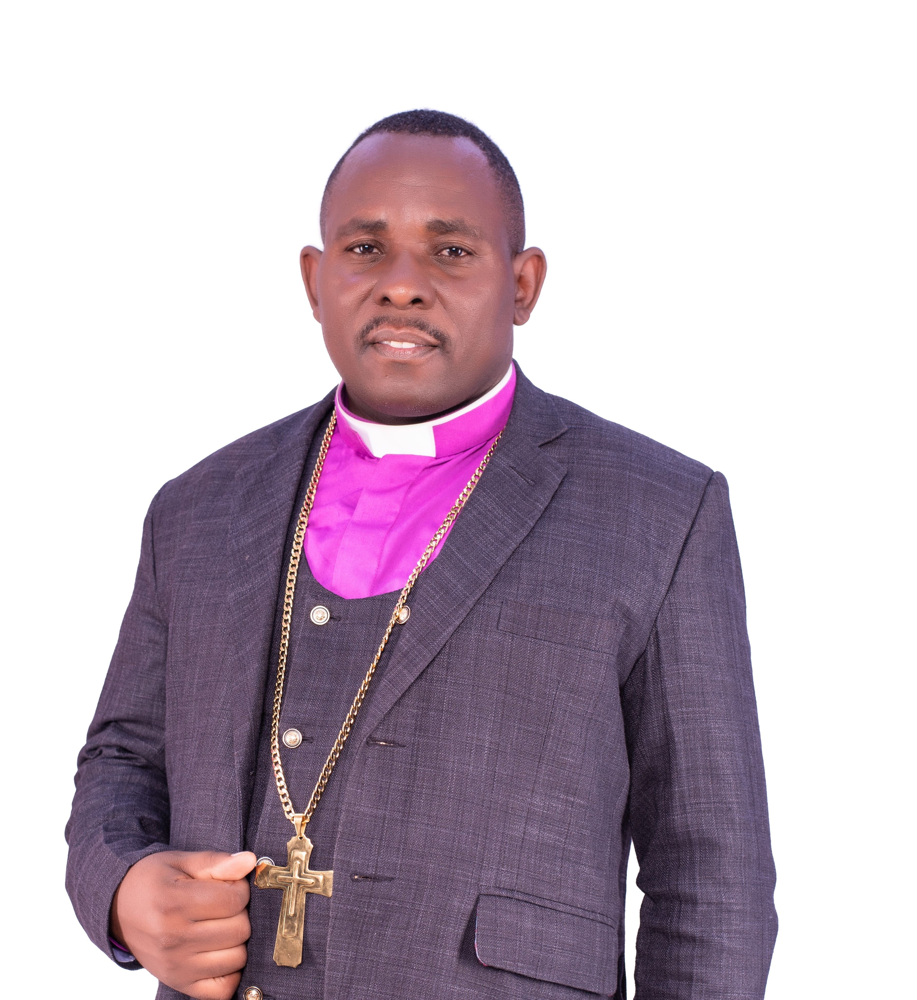
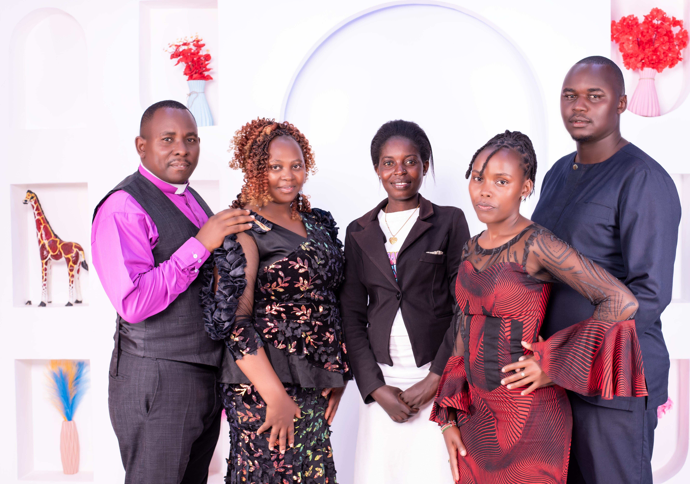
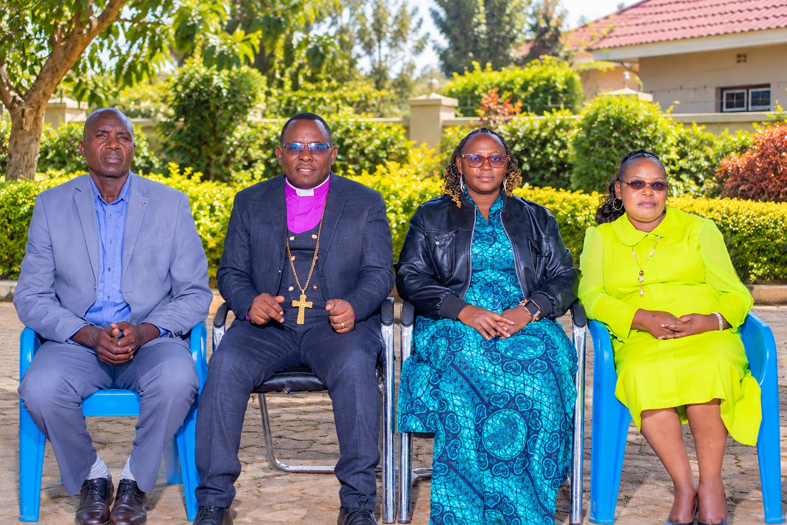

Raising a Godly & Royal Generation
To raise Priesthood Families with excellent mindset and Godly influence.
Rock Priesthood Church is a Christian church committed to raising a Godly and royal generation through worship, fellowship, the Word of God and service.
Rock Priesthood Church exists to maintain a place for worship of the Lord God, honour the work of the Holy Spirit and provide Christian fellowship for people of like faith. The church also seeks to share the Gospel of Jesus Christ and serve the wider community through practical initiatives that promote the welfare of people.
The church is committed to preaching the Word of God, encouraging peace and unity, supporting social initiatives, managing resources in support of its work, forming branches and remaining non-political in its development activities.
To raise Priesthood Families with excellent mindset and Godly influence.
To nurture a chosen people, a royal priesthood, a holy nation and God's special possession, that they may declare His praises.
“A chosen generation, a royal priesthood, a holy nation, God's special possession.”
1 Peter 2:9
Rev. Patrick Musa committed his life to Christ at 16 and received a distinct call to ministry in 2006. With more than two decades of ministry experience across youth leadership, pastoral counselling, church planting and church leadership, he was ordained in 2019 under the mentorship of Bishop Dr. Philip Nthuki Peter of Generational Faith Ministry.
In 2025, Rev. Patrick pioneered Rock Priesthood Church and continues to serve as its lead clergy, carrying a vision to raise a strong and courageous generation rooted in God's Word. Married to Pst Purity since 2017, they serve together in ministry and are blessed with two sons.
His preparation includes theological and leadership training, alongside a Diploma in Land Surveying, which contributes to his approach to planning, governance and ministry development.
Pst Purity was born again and began serving in children’s ministry at age 13. Driven by 1 Corinthians 15:58, she completed theological studies in 2019 and was ordained as a pastor that year.
Today, she serves alongside Rev. Patrick, overseeing the church's ministries and giving particular attention to the Children’s and Ladies Ministries. Her passion is to raise a godly next generation while mentoring and empowering women to walk boldly in their divine purpose.
My passion is to equip every generation—starting from our youngest—to walk boldly in their faith, understand their identity in Christ, and serve God with purpose.
Parallel to her departmental oversight, she continues to direct the Children’s Ministry, championing a vision that integrates children into the life of the church.
Our Associate Pastoral Team works closely with the church leadership to shepherd, equip and serve the church family through spiritual care, ministry leadership and practical support.

Our pastoral team works closely with the Senior Pastor to shepherd, equip and serve the church family. They provide spiritual oversight, ministry leadership and operational support to advance the mission of the church.
Pastoral Care & Counselling: Providing spiritual guidance, prayer and pastoral support to individuals and families.
Discipleship & Preaching: Teaching the Word, leading Bible studies and mentoring ministry leaders.
Ministry Oversight: Supporting ministry operations, service coordination and church programmes.

Our deacons are dedicated to advancing the ministry of mercy, service and church administration. Grounded in servant leadership, they help maintain the spiritual, practical and operational integrity of the congregation.
Pastoral Care & Visitation: Providing spiritual support, prayer and care to the sick, homebound and families in seasons of transition or crisis.
Church Administration & Stewardship: Supporting operational logistics, facility oversight, record-keeping and the orderly management of church resources.
Benevolence Ministry: Administering confidential assistance and resources to individuals and families experiencing financial or material hardship.
Service Support: Supporting service preparation, the administration of sacraments, order and hospitality.
Rock Priesthood Church is governed through a clear leadership structure that supports spiritual oversight, accountability, ministry coordination and the healthy growth of the church.
Rock Priesthood Church – Mikuyu is recognised as a congregational member in good standing of the Evangelical Alliance of Kenya, affiliated with the World Evangelical Alliance. The church affirmed the Alliance’s Statement of Faith and was received into membership following approval by its Board of Directors on 1 January 2026.